Using AI tools to teach old apps new tricks
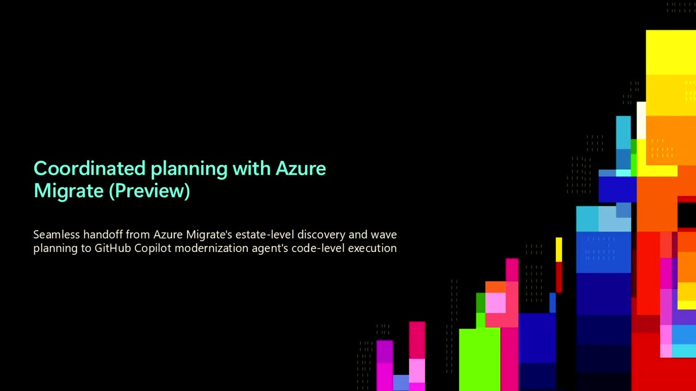
Official description
Modernizing apps isn’t just rewriting code—it’s untangling dependencies, tracing data flows, and making changes without breaking production. In this session, we’ll show how you can use agentic AI to take on the hardest parts of modernization: analyzing large codebases, mapping dependencies, planning upgrades, refactoring safely, while doing it all at scale. With GitHub Copilot modernization capabilities, you can move from legacy complexity to modernized apps in days, not months. Seating for this session is first-come, first-served. Add it to your schedule to plan your day and arrive early to secure a spot.
Summary
Overview
This advanced session demonstrates how GitHub Copilot Modernization and Azure Copilot combine into an end-to-end agentic system for modernizing legacy application portfolios at scale. The presenters argue modernization is now a continuous, governed lifecycle—spanning assessment, planning, code transformation, and deployment—rather than a one-time per-app project, and show live journeys upgrading mainframe, Java, and .NET workloads.
Key announcements
- Modernization Agent in the CLI is generally available — Orchestrates simultaneous assessments and migration plans across an entire app portfolio, with end-to-end automated Java and .NET framework upgrades (00:09:55).
- Custom skills generally available — Lets teams encode their own migration patterns, internal libraries, and Azure best practices once and reuse them across the portfolio (00:10:23).
- Command Center in Private Preview — A self-hostable portal giving a portfolio-level dashboard of modernization status, timelines, and comparable assessment reports (00:25:30).
- Rulebooks in Private Preview — Centrally encode governance, security, and architecture standards so agents modernize with guardrails and auto-generate compliance reports (00:27:16).
- Mainframe modernization added to GitHub Copilot Modernization — Reverse-engineers COBOL, JCL, and BMS into per-program documentation, then reimagines it as native Java with a native SQL data layer, delivered with partner experts (00:12:28).
- ASP.NET Web Forms and Aspire scenarios in Private Preview — Converts Web Forms apps to Blazor, adds Aspire orchestration, and deploys to Azure Container Apps (00:33:42).
- Azure Migrate to GitHub Copilot handoff — A seamless configuration-file handoff lets IT-led on-prem discovery flow into developer code assessment, with reports returned to Azure Migrate storage (00:22:23).
Topics covered
- Continuous modernization lifecycle: assess, plan, execute, innovate, observe, troubleshoot, optimize
- Three pillars of enterprise modernization: scale, customization, and governance
- Parallelized cloud coding agents working across tens of thousands of applications
- Reverse-engineering legacy mainframe code into documentation, call graphs, and data lineage
- Struts-to-Spring Boot (Java 21) and Web Forms-to-Blazor transformations
- Security woven throughout: CVE/CWE scanning, deprecated API detection, secrets moved to Key Vault
- Custom skills for internal patterns (Kafka to Azure Event Hubs, PII-safe logging)
- Aspire as a polyglot code-first orchestration and observability layer
Notable quotes
"Before agents, this was hand-to-hand combat. A few apps at a time, that's it." — Jeff Fritz
"Isn't it cool now the agents have rules too?" — Nish Anil
"GitHub Copilot modernization has completely changed how we think about .NET upgrades. Fully automated, customized, cloud-driven upgrades just work, and they make it the first tool any team should reach for." — Jordan Cleigh [inferred], Staff Platform Engineer at FMG (quoted by Jeff Fritz)
Products and tools mentioned
- GitHub Copilot Modernization
- Azure Copilot (Preview)
- Modernization Agent (CLI)
- Command Center
- Rulebooks
- Custom skills / Skills Library
- Azure Migrate
- Visual Studio Code, Visual Studio
- .NET Aspire
- Azure Container Apps
- Azure Key Vault
- Azure Event Hubs
- OpenTelemetry
- Blazor (Server)
- Spring Boot, Java 21, .NET 10
- Cloud Adoption Framework landing zones
Speakers featured
- Jeff Fritz — Principal Program Manager, GitHub Copilot Modernization team
- Nish Anil — GitHub Copilot Modernization team
- Hazem El-Hammamy — GitHub Copilot Modernization team
Follow-up resources
- aka.ms/ghcp-modernization — entry point for the Microsoft Learn documentation
Frames
{kind=link}
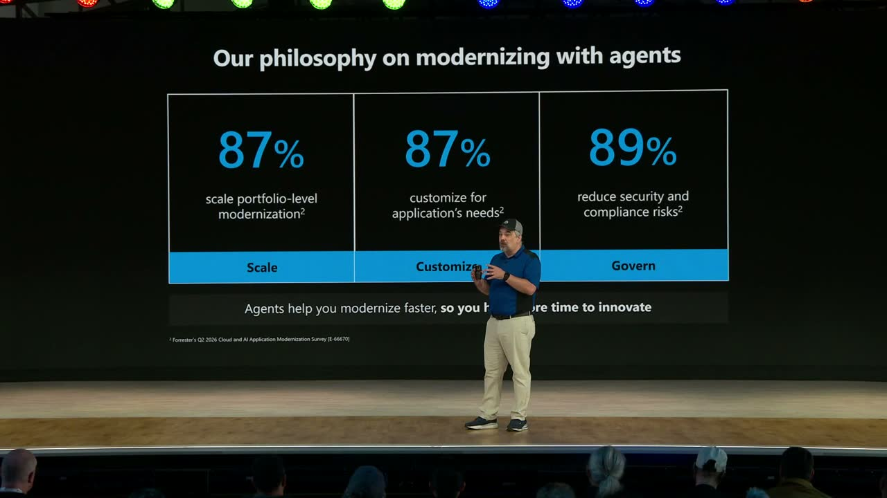
{kind=link}
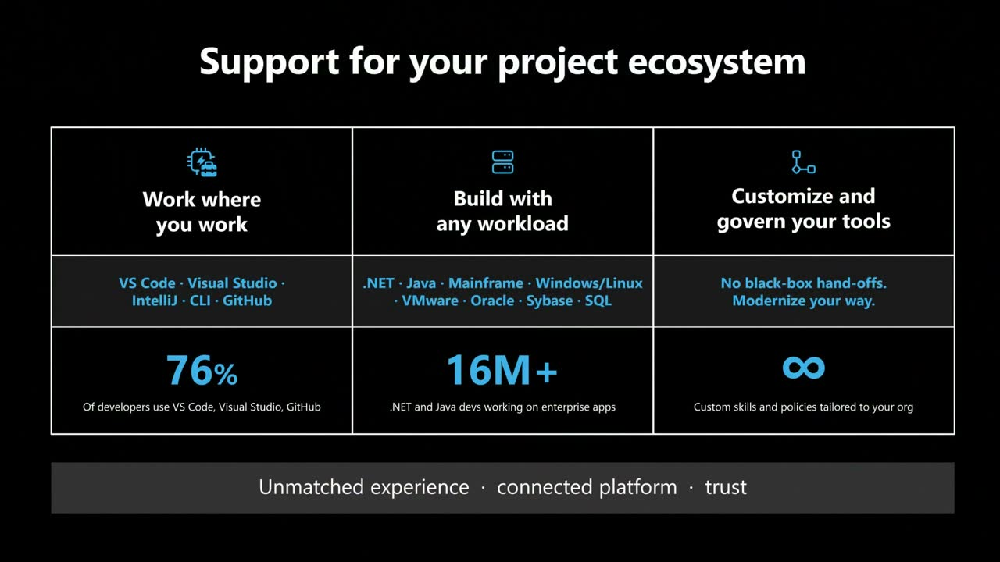
{kind=link}
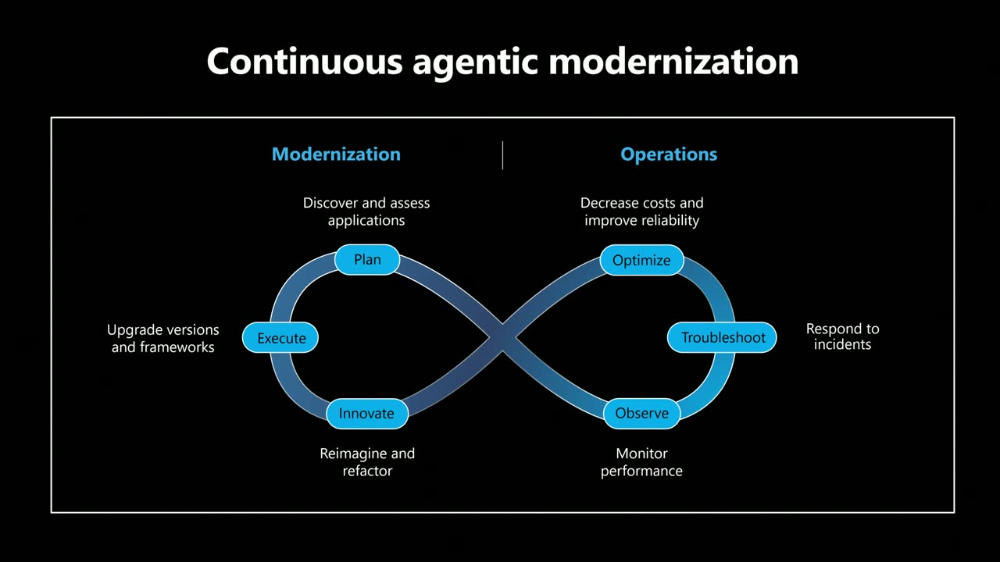
{kind=link}
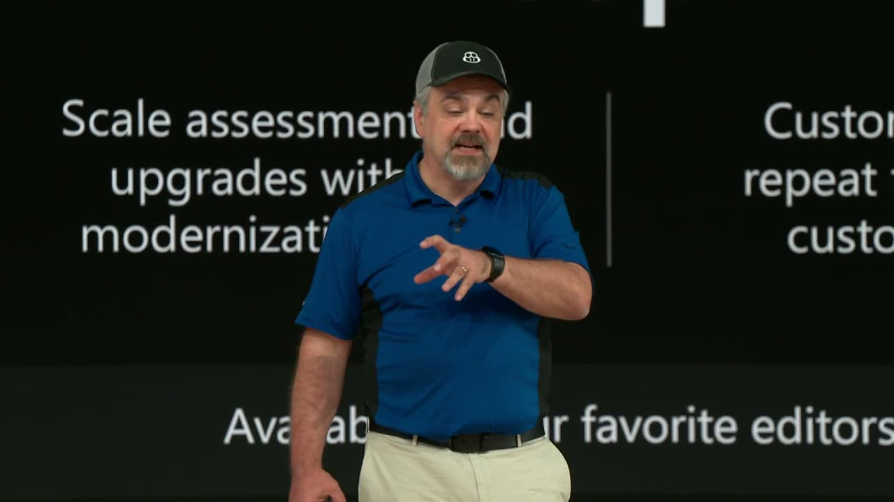
{kind=link}
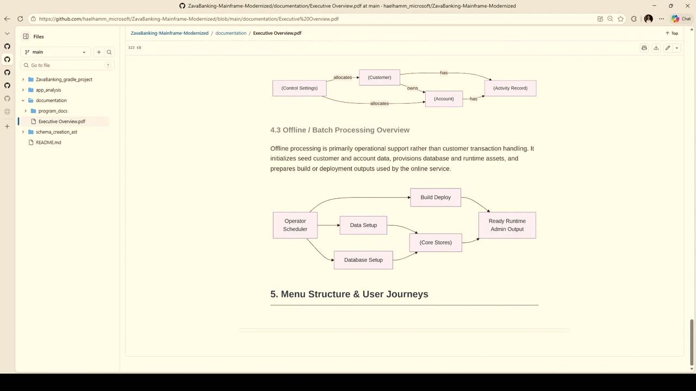
{kind=link}
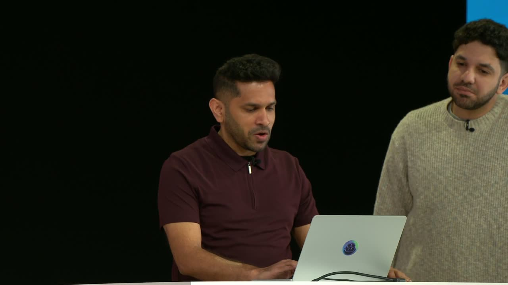
{kind=link}
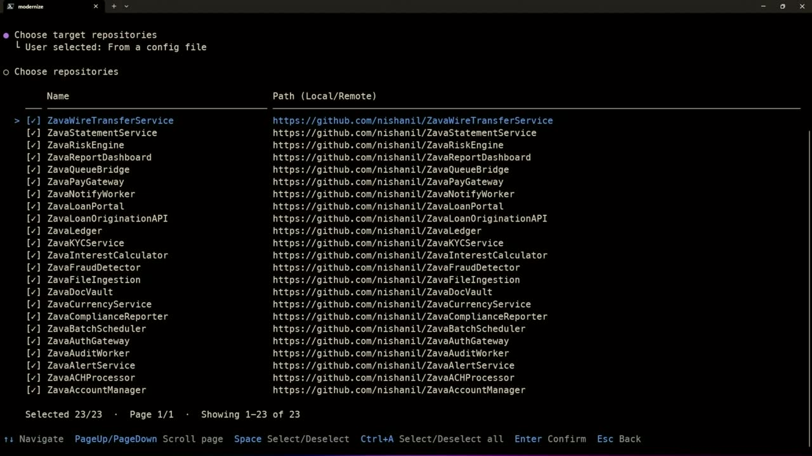
{kind=link}
{kind=link}
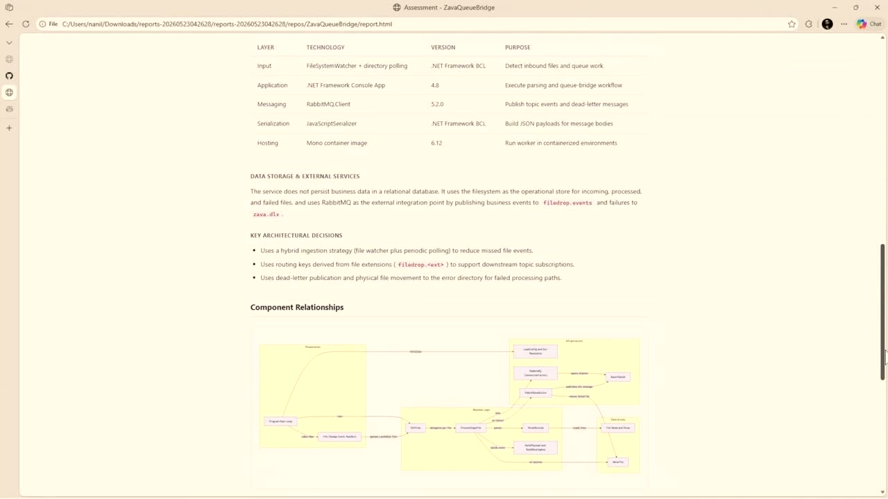
{kind=link}
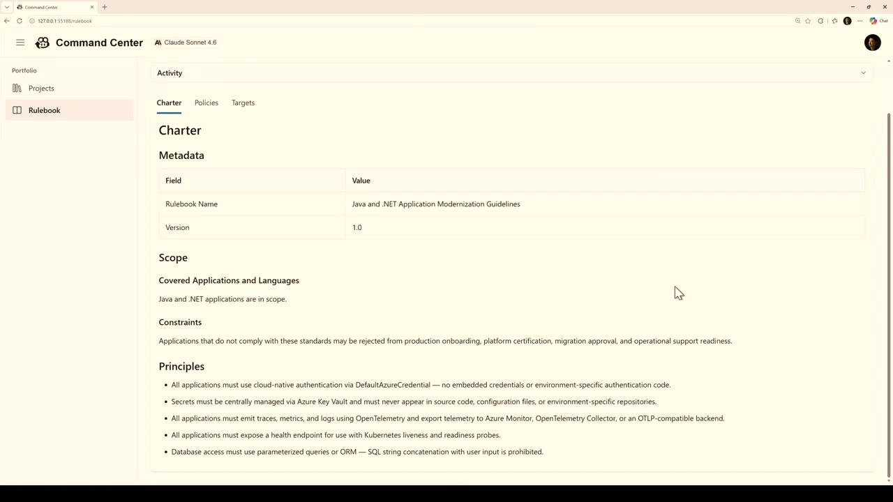
{kind=link}
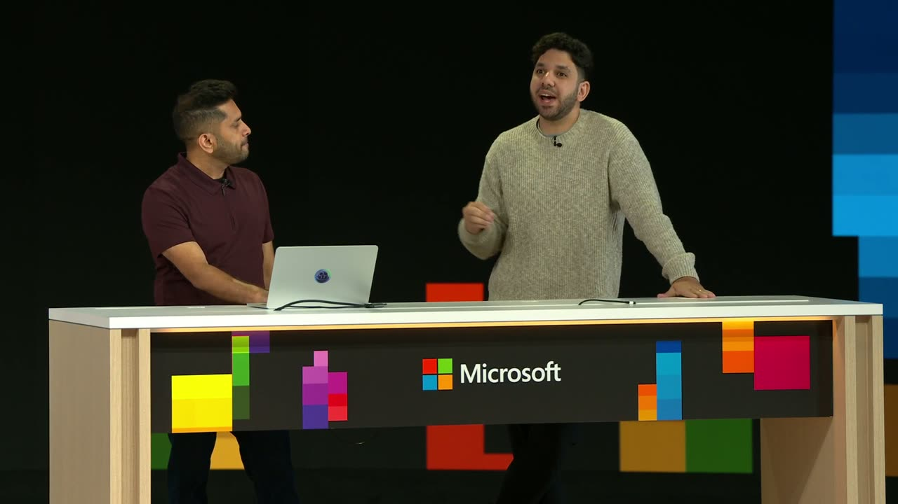
{kind=link}
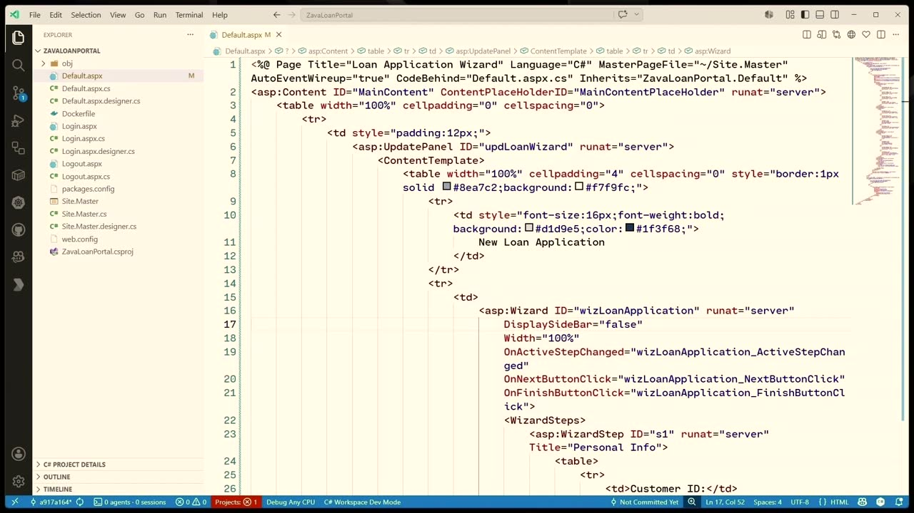
{kind=link}
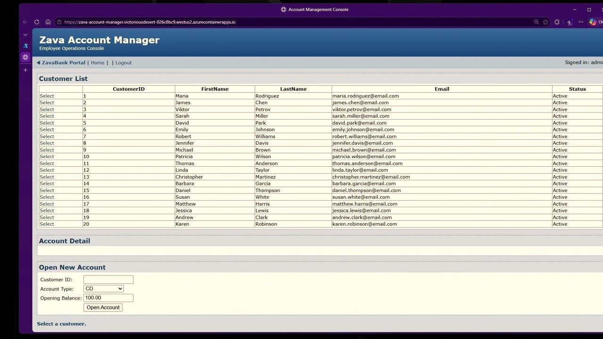
{kind=link}
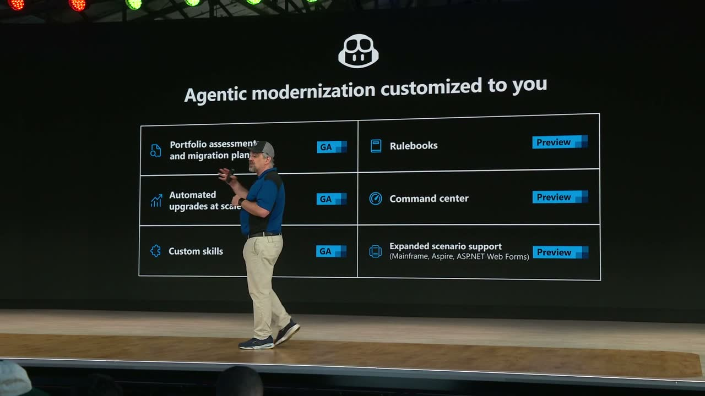
{kind=link}
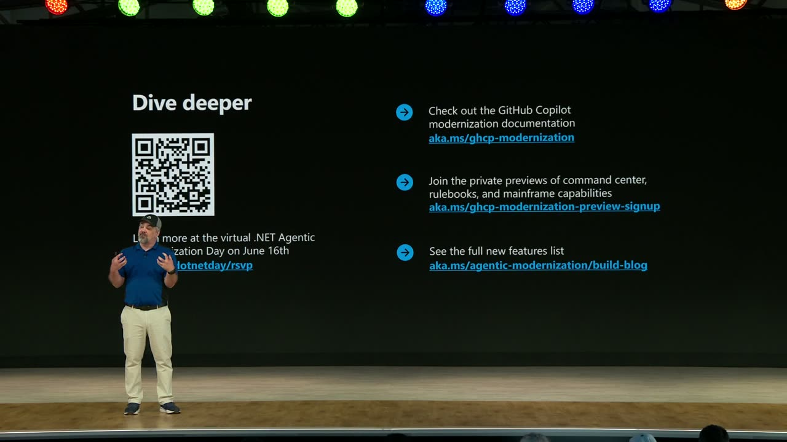
Transcript
Show / hide transcript (60,133 chars)
[00:00:02] Jeff Fritz: Hey. [00:00:02] Good morning, everyone. [00:00:04] It's so good to see you here live [00:00:06] at Microsoft Build in San Francisco. [00:00:08] And for those of you that are out there watching at home [00:00:11] around the world, welcome in. [00:00:13] It's so good to have you joining us. [00:00:14] And of course, those of you that are watching the recording, [00:00:17] thank you so much for tuning in as well. [00:00:19] My name is Jeff Fritz, and I'm a Principal Program Manager [00:00:23] on the GitHub Copilot Modernization team. [00:00:25] And in today's session, I'm going to be joined [00:00:28] by my colleagues, Nish and Hazem, and we're going to look [00:00:31] at how AI is changing modernization itself. [00:00:34] Not just how you write code, [00:00:36] but also how you eliminate the day-to-day friction [00:00:39] that slows your teams down. [00:00:42] Those upgrades, those migrations, and worst of all, [00:00:45] the tech debt backlogs. [00:00:48] I've been testing and tinkering with the application [00:00:51] and the system that you're going to see here in my systems, [00:00:55] and it's been a magnificent experience that I can't wait [00:00:57] for you to learn more about. [00:00:59] Now, for you enterprise developers out there, [00:01:01] this is a game changer in how you scale your work [00:01:05] without losing customization or control. [00:01:08] Let's dive into it. [00:01:11] So look, modernization isn't new. [00:01:15] But now with AI in the picture, it's more urgent than ever. [00:01:19] Forrester's Q1 2026 survey says that 94% [00:01:23] of IT leaders rank app modernization [00:01:26] as a top investment for the next six to 12 months. [00:01:30] That's basically everybody. [00:01:32] But here's the thing. [00:01:34] There's some serious furto behind the way [00:01:36] that these teams keep legacy systems alive. [00:01:38] You feel the weight that that technical debt carries [00:01:41] every day. [00:01:42] Over a third of modernization projects stall, [00:01:45] because monoliths are just that complex. [00:01:48] Resources are tight, and security concerns pile up. [00:01:52] And when modernization stalls, [00:01:54] that technical debt doesn't just sit there. [00:01:57] It grows. It grows kind of like a fungus, and eats into the time [00:02:00] that you'd be spending on the AI-ready work [00:02:03] that your organizations are asking you to prioritize. [00:02:07] Modernization by itself isn't the goal. [00:02:10] It is what it unlocks -- [00:02:12] the innovation, the new capabilities. [00:02:14] But the toil of actually getting there, that's the blocker. [00:02:19] So that's why developers, architects, [00:02:22] and planners are turning to agents, [00:02:24] to cut through the manual work, manage the complexity, [00:02:28] and keep things secure along the way. [00:02:31] Now, when we're building agents for modernization, [00:02:36] we're not just thinking about one team or one role. [00:02:39] We're targeting the pain points across your entire organization [00:02:43] that are going to slow you down. [00:02:45] Customers keep telling us the same three things: [00:02:47] They need scale, they need customization, [00:02:50] and they need governance. [00:02:52] And the Forrester data backs this up with 87% or more [00:02:56] of organizations agreeing that they need all three. [00:02:59] So when we think about scaling, you're not going to work [00:03:03] on just one app at a time in your code editor. [00:03:06] That's not going to get you there. [00:03:08] You need your entire modernization lifecycle [00:03:11] to scale, from assessments to migration plans, [00:03:14] version upgrades, framework changes, [00:03:17] all of it executing together. [00:03:20] And we need customization in this. [00:03:21] We know that every app is different, [00:03:23] and you didn't write the same source code [00:03:25] for every application. [00:03:27] We've seen some of your code. [00:03:29] Agents can be set up and provisioned to assess [00:03:33] and transform code based on each application's specific needs [00:03:37] and objectives. [00:03:38] And of course, governance. [00:03:40] All of this transformation has to happen safely. [00:03:43] And that means human in the loop review. [00:03:45] But also, there's policies that we can implement that help [00:03:49] to engage approval and band patterns. [00:03:53] Compliance rules can be baked in with monitoring [00:03:56] and audit trails the whole way through our process. [00:04:00] We're investing in all three areas [00:04:03] so agents can help you modernize faster [00:04:05] and you get more time back to actually innovate. [00:04:09] Building great agents matters. [00:04:12] But building them natively where you already work [00:04:15] across workloads that you actually have, that's going [00:04:18] to give you an unmatched experience, [00:04:22] a connected platform, and trust. [00:04:24] You're going to see these tenets show up throughout the product. [00:04:28] First, we want to allow you to work where you work. [00:04:33] 76% of developers live in Visual Studio code, Visual Studio, [00:04:38] IntelliJ, the Command Line, and GitHub. [00:04:42] So instead of asking you to go learn another application [00:04:45] or go figure out another console app, [00:04:47] we're going to bring the agents to you. [00:04:50] Second, we want to build with any workload. [00:04:53] We're already serving over 16 million .NET [00:04:55] and Java developers, and we're the only vendor taking a truly [00:04:59] holistic estate-level approach. [00:05:02] As an enterprise developer, you have to understand apps, data, [00:05:05] and infrastructure together. [00:05:08] That's a lot. [00:05:09] And just tackling one of those three isn't going [00:05:12] to solve your modernization issues. [00:05:14] So that means modernizing those aging VMware apps, Windows [00:05:18] and Linux workloads, .NET and Java apps, Oracle, Sybase, [00:05:23] SQL Server, even mainframes. [00:05:25] And in the mainframe scenario, [00:05:27] we have a hybrid concierge approach [00:05:29] that pairs agents with partner experts. [00:05:33] Third, we want to customize and govern your tools. [00:05:37] No black-box hand-offs. [00:05:39] You modernize your way. [00:05:41] The agent ships with over 60 specialized skills [00:05:44] out-of-the-box, and you can layer your own custom skills [00:05:48] and rulebooks on top of that [00:05:50] so that it learns how your organization actually works. [00:05:56] So here's the vision. [00:05:57] Modernization should be continuous, [00:05:59] intelligent, and collaborative. [00:06:01] That's why Azure Copilot [00:06:02] and GitHub Copilot together form the first end-to-end agentic [00:06:07] modernization solution, unifying IT [00:06:10] and developer workflows in one system. [00:06:13] Azure Copilot in Preview is built for IT operations folks [00:06:17] who live in the Azure portal. [00:06:20] It integrates directly into Azure [00:06:22] and standardizes how migration and modernization happen [00:06:25] across your entire estate. [00:06:27] We're talking rapid discovery and inventory, topology [00:06:30] and dependency mapping, ROI analysis, [00:06:33] and 6R aligned wave planning, [00:06:35] so that leaders can prioritize the right infrastructure, [00:06:39] apps, and databases first. [00:06:42] It spins up the Cloud Adoption Framework aligned landing zones [00:06:45] with compliance guardrails baked in. [00:06:48] They're ready to receive your modernization workloads then. [00:06:53] The plans that your central IT generates then flow downstream [00:06:57] to app and database teams. [00:06:59] What then gets decided at the top translates [00:07:02] into coordinated execution at scale. [00:07:06] GitHub Copilot is built for developers and architects [00:07:08] who live in the editor and the CLI. [00:07:11] This is where the actual modernization work happens -- [00:07:14] code assessment, upgrading versions and frameworks, [00:07:17] migration planning, executing, refactoring, replatforming, [00:07:22] and reimagining journeys across apps, [00:07:24] databases, and the mainframe. [00:07:26] And then we want to deploy all of those [00:07:29] to modern managed services running on Azure. [00:07:33] Now, look at the list of items that we have there at the bottom [00:07:36] of the screen: plan, execute, innovate, observe, [00:07:41] troubleshoot, optimize. [00:07:43] Modernization isn't a one-time project anymore. [00:07:46] It's a continuous loop. [00:07:48] And the proof is in the numbers. [00:07:50] We're seeing 70% reductions in modernization time, [00:07:53] over 50% reductions in effort to eliminate technical debt. [00:07:57] And internal customers like XBOX [00:07:59] and Teams have seen 88% time and effort savings. [00:08:03] The reason this works now is parallelization. [00:08:06] That's easier for me to say. [00:08:07] Coding agents running in parallel take on companies [00:08:10] with tens of thousands of applications. [00:08:13] And before agents, this was hand-to-hand combat. [00:08:15] A few apps at a time, that's it. [00:08:19] So think of it this way. [00:08:21] Our agents are purpose-built for every stage [00:08:23] of the continuous modernization lifecycle. [00:08:26] The left side, modernization. [00:08:28] The right side, operations. [00:08:30] And today we're going to focus a little bit more on the left. [00:08:33] On the modernization side, [00:08:34] Azure Copilot's Migration Agent is the IT-led entry point [00:08:38] for planning, discovery, dependency mapping, [00:08:41] business cases, and the 6R wave planning. [00:08:45] GitHub Copilot drives execution, assessing apps, [00:08:48] transforming code, upgrading frameworks, [00:08:51] containerizing workloads, and deploying to Azure. [00:08:55] Then, in the innovation stage, teams can refactor [00:08:58] and reimagine apps for AI readiness. [00:09:01] .NET framework moves to modern .NET, legacy Java to current, [00:09:05] swapping old dependencies for modern Azure SDKs. [00:09:10] The operation side keeps your modernized apps healthy: [00:09:12] observability, incident response, [00:09:15] cost and performance optimization. [00:09:17] It's a continuous loop, not a one-and-done migration. [00:09:22] And security, security is woven throughout: CVE scanning, [00:09:27] deprecated API detection, remediation, [00:09:30] built right into the workflow. [00:09:33] Now let's look at agentic modernization side, [00:09:36] where developers live. [00:09:38] It's built directly into GitHub Copilot. [00:09:40] GitHub Copilot modernization is your end-to-end agentic [00:09:44] modernization system, expanded across scale, [00:09:48] customization, and governance. [00:09:50] Those three pillars that we just talked about, [00:09:52] here's where they come to life. [00:09:55] First, the modernization agent. [00:09:57] Now generally available, this is how you scale assessments [00:10:01] and upgrades across your entire portfolio. [00:10:04] You operate it from the CLI. [00:10:06] It orchestrates multiple assessments [00:10:07] and migration plans running simultaneously [00:10:10] and then hands those plans off to developers who can execute [00:10:14] and validate in your IDE. [00:10:17] Java and .NET framework upgrades are now automated, end-to-end, [00:10:21] straight from the agent CLI. [00:10:23] Second, custom skills, also generally available today. [00:10:27] This is how you customize and repeat tasks. [00:10:30] You encode your team's specific migration patterns once, [00:10:33] then reuse them across your portfolio. [00:10:36] Write once, reuse at scale. [00:10:39] Your developers keep their business specific logic [00:10:41] and goals while still hitting enterprise scale speed. [00:10:45] Third, we have a command center and rulebooks that we're going [00:10:49] to show you today that are in Preview. [00:10:51] This is how you oversee and govern all of it. [00:10:54] The command center gives you a portfolio level view [00:10:56] and rulebooks bake in your policies. [00:10:59] This gives you a human in the loop at every step [00:11:02] and full auditability across your teams. [00:11:05] And the best part, it's available everywhere [00:11:07] that your teams already work: your favorite editors, the CLI, [00:11:11] the command center and GitHub itself. [00:11:14] One link to take with you, right there: [00:11:16] aka.ms/ghcp-modernization. [00:11:20] All right, that's going to take you to the entry point [00:11:22] for our Microsoft Learn documentation. [00:11:25] All right, we're ready [00:11:26] to see the end-to-end process in action? [00:11:29] I'm going to welcome on my friends, Nish and Hazem, [00:11:32] to show us how we get started upgrading some [00:11:35] of our most difficult legacy applications. Fellas. [00:11:38] [ APPLAUSE ] [00:11:39] Nish Anil: Thank you, guys. [00:11:40] Hazem El-Hammamy: Good morning, everybody. [00:11:41] Nish Anil: Good morning. [00:11:43] How are you doing, Hazem, today? [00:11:44] Hazem El-Hammamy: Pretty good, pretty good. [00:11:45] Nish Anil: Okay, so are you ready [00:11:47] to teach the old apps new tricks? [00:11:49] Hazem El-Hammamy: Let's do it. How old, though? [00:11:51] Are we talking legacy Java applications, [00:11:53] .NET Framework 3.5, maybe? [00:11:55] Nish Anil: Well, .NET and Java, [00:11:56] we are definitely going to do, you know? [00:11:58] But before that, I want to give you a challenge. [00:12:00] You look very young. [00:12:02] It doesn't look like you know COBOL. [00:12:04] How about we start from a mainframe modernization? [00:12:06] Hazem El-Hammamy: Okay, that's actually a pretty big challenge, [00:12:09] but I have the perfect example here. [00:12:11] Let's switch to our demo machine, [00:12:13] where we've pre-recorded some modernization journeys [00:12:15] for you folks. [00:12:16] And let's actually take a look [00:12:17] at a terminal green screen application built on COBOL [00:12:20] and JCL scripts and BMS screen maps. [00:12:23] And you'll see a lot of these actually running [00:12:26] on these legacy technologies. [00:12:28] And we're very happy here to show [00:12:30] that we'll actually introduce mainframe modernization as part [00:12:33] of GitHub Copilot modernization. [00:12:34] Now, this will help accelerate the overall mainframe [00:12:37] modernization journey and really focused on making sure [00:12:40] that it's very succinct [00:12:42] and cautious throughout the entire journey, and you're able [00:12:45] to do this with confidence as you're doing this step by step. [00:12:47] Because we understand that mainframes [00:12:49] are very core pieces of your business. [00:12:51] So let's take a look at what this looks like. [00:12:54] Now, when you actually start, you're actually going to be able [00:12:57] to open this up within the modernized CLI, [00:12:59] where you're going to be able to start [00:13:00] to assess your application. [00:13:02] Now, an assessment starts by looking at that source code [00:13:05] that we talked about, which was COBOL and JCL, BMS, [00:13:07] DB2 and VSAM files, and it will identify any missing [00:13:10] dependencies, to make sure that if there are any problems [00:13:14] that actually highlight the modernization journey -- [00:13:18] sorry, any problems that will actually cause any modernization [00:13:22] downstream issues because there are missing dependencies, [00:13:24] we catch them early on. [00:13:26] But beyond just catching the modernization dependencies [00:13:29] issues, we actually want to be able to document your mainframe. [00:13:33] Because what we hear from a lot of our customers is, [00:13:35] before they even start a modernization journey, [00:13:37] they really need to understand what their mainframe does [00:13:40] and how it does it. [00:13:41] So let's take a look at this. [00:13:42] First, we provide an overview, a holistic overview, [00:13:46] of your mainframe application, an executive summary [00:13:48] of what the application actually does, [00:13:50] who are the different user personas that interact [00:13:52] with that application, what are the different functional modules [00:13:55] and the key capabilities for that application. [00:13:58] We also want to take a look [00:13:59] at what the actual application architecture looks like. [00:14:01] Then, if there are any user journeys, we want to be able [00:14:04] to fan them out and understand [00:14:05] for that terminal green screen application, for example, [00:14:08] we want to be able to fan out those different options. [00:14:10] And then we also really want to focus [00:14:13] on the key business processes. [00:14:14] Where are the major decision points that are happening [00:14:16] within your application? [00:14:17] Now, this is to provide an end-to-end holistic overview, [00:14:20] but we also want to be able [00:14:21] to provide more detailed information. [00:14:23] So we can go into the program level and we actually talk [00:14:25] about every individual program [00:14:27] and we explain it for the overview. [00:14:29] What does this program do? [00:14:30] For every data field, what is its purpose within the system, [00:14:33] the overall program structure, [00:14:34] and most importantly, the business logic. [00:14:36] What are the actual ins and outs of your application? [00:14:38] What are the steps that are actually happening [00:14:40] that compose your entire application, [00:14:42] the step-by-step process? [00:14:43] And finally, a visualization [00:14:45] to understand what the actual call graph looks like, [00:14:47] as well as the data lineage within your application. [00:14:49] What are the data inputs and outputs that you're going to see [00:14:52] for that mainframe application? [00:14:53] And that's going to be very key [00:14:54] to understanding how your mainframe behaves. [00:14:57] Nish Anil: This is really cool. I mean, so you're saying [00:14:59] that what we did is we reverse engineered the entire COBOL [00:15:02] into a documentation that now we can go [00:15:05] and re-architect into a Java app? [00:15:07] Hazem El-Hammamy: Absolutely. And that's [00:15:09] what we're going to do at the next stage. [00:15:10] So the next stage looks [00:15:11] at actually modernizing this content. [00:15:13] And the first step of this is to actually modernize your SQL -- [00:15:17] your data layer into a native SQL implementation. [00:15:20] So the goal here is what you'll see is a report [00:15:22] which essentially maps every data field that you have [00:15:25] in your mainframe into an equivalent data field in SQL. [00:15:28] And the goal here is that you should be able [00:15:30] to understand what that data representation looks like, [00:15:33] you'll be able to view that in VS Code as well, [00:15:34] and you'll be able to look at the different relationships [00:15:36] across the different tables that were generated [00:15:38] for your data layer as well. [00:15:40] Now, at this stage, you really want to take a look [00:15:42] at what are my business requirements, [00:15:44] what are some changes I want to be able to inject at this stage. [00:15:46] And any changes that you make to tables here will be carried [00:15:49] over to the next step, which is the application transformation. [00:15:52] Now, you might be thinking, are we just generating a bunch [00:15:55] of specs and then feeding them into Copilot, for example, [00:15:57] to generate an equivalent application? The answer is no. [00:16:00] We have built-in knowledge to actually modernize this [00:16:02] from a mainframe workload. [00:16:04] So as you're transforming and modernizing, [00:16:06] some nuances knowing that this is going to be migrated [00:16:09] from a mainframe are included. [00:16:11] And what you'll see here is a set of instructions on how [00:16:14] to set this up, how to set up your database, [00:16:16] and how to build this. [00:16:17] And the goal here is to provide you with a native implementation [00:16:20] of this mainframe application. [00:16:21] Really, we really want to look [00:16:23] at a similar application now modernized [00:16:26] into Java that you'll see here. [00:16:28] And the goal of this is to provide, [00:16:30] I would say, an interim step. [00:16:31] And Nish is going to show us how do we then customize this [00:16:35] application for our right target requirements and behaviors [00:16:38] that we actually want to. [00:16:40] Nish Anil: Perfect. All right, let's get started with that one. [00:16:42] So this is a typical Zava Bank application. [00:16:46] I mean, it's running in production [00:16:47] for many, many years, 20, 25. [00:16:52] So let's see what the code repo looks like. [00:16:54] I mean, I'll just put everything into a VS Code just [00:16:57] to give you insight on what a bank application would [00:17:00] look like. I have account manager, I have fraud detector. [00:17:03] As you see, there's one Java application, [00:17:05] it's a Struts app written in the early 2000s. [00:17:08] I also have a mix of .NET app, I have the web.config, [00:17:13] if you know, you know. [00:17:14] There's default.aspx file, [00:17:16] there's an ASP.NET Web Forms, everything out there. [00:17:19] So it's a mix of all the apps and in a portfolio. [00:17:22] Now, we do have the GitHub Copilot Modernization Agent [00:17:26] in the VS Code and Visual Studio. [00:17:28] So you can start from your favorite IDE [00:17:30] and start doing the assessments. [00:17:32] I can do runtime and framework upgrades. [00:17:35] Or if I'm deciding to go to cloud native and migrate [00:17:38] to Azure, I can choose that option. [00:17:40] Or I simply can start with security issues, [00:17:44] look at the CVEs, CWEs, and all those things. [00:17:46] Well, this kind of works for a single app. [00:17:51] If a developer working in a single project, it makes sense. [00:17:54] But what if there are like multiple applications? [00:17:56] Hazem El-Hammamy: I don't know. You're [00:17:57] showing me 20 applications here, man. How do we do this at scale? [00:17:59] Nish Anil: Exactly. And I'm a lead developer and architect, [00:18:01] and I need to modernize all of these applications. [00:18:03] It is going to be challenging. [00:18:04] So what we've done is we now have the GitHub Copilot [00:18:09] Modernization Agent in CLI and it's now generally available. [00:18:13] So what you can do is you can scale application assessments [00:18:16] and upgrades across your entire app portfolio. [00:18:20] So let's go look at what does that look like, right? [00:18:23] So here I am. [00:18:24] Before I show you the modernized CLI, [00:18:26] I want to show you quickly a JSON file. [00:18:28] It's a configuration file. [00:18:29] All that it has is, I mean, we are talking about app portfolio. [00:18:32] We have multiple projects, [00:18:33] multiple teams having multiple repos, right? [00:18:35] And as an architect, I'm looking at all the URLs that's available [00:18:39] on my GitHub that I can go and modernize. [00:18:41] So that's the configuration file. [00:18:42] So we'll go look at the modernized CLI in a bit. [00:18:46] So here we go. [00:18:48] So that's the modernized CLI. [00:18:49] We'll start with a command. [00:18:51] And as you see, there is a couple of options here. [00:18:55] You can start with assessment, you can do the planning, [00:18:57] you can do the execution. [00:18:59] Now, when you're talking about all these things, [00:19:01] we're talking about scale here. [00:19:02] It's not just one application, [00:19:04] it's multiple applications, right? [00:19:06] So you can also go and upgrade your [00:19:07] applications if that's what you want. [00:19:08] You want to take care of the technical debt, [00:19:11] we can do that at scale as well. [00:19:13] And we're talking AI today, so we can also choose models right [00:19:18] from here, whichever works best for your scenario, [00:19:20] or choose to the default one [00:19:22] that we believe will give you the most value. [00:19:25] So we'll start with the assessment. [00:19:28] Let's go look at what does an assessment looks like. [00:19:30] So remember I showed you the configuration file? [00:19:33] I can start with the configuration file. [00:19:34] I can put the exact repo URL. [00:19:37] And you see, once again, it gives me a confirmation: [00:19:41] Am I ready to modernize all these applications [00:19:44] or assess for now? [00:19:46] I say confirm. I'm good with this. [00:19:48] I can make changes if I want to. [00:19:49] And then go into the assessment domains [00:19:50] and choose what are the assessments that I want to do. [00:19:53] Do I want to do upgrades? [00:19:54] Do I want to do cloud readiness? [00:19:56] Well, I want to do all of that and also ensure [00:19:58] that security is also taken care of so [00:20:00] that I can go into the details. [00:20:01] Now, in the next screen, you can see [00:20:03] that I can choose the analysis coverage. [00:20:06] I can go from issue only to a full analysis. [00:20:09] And this is the power of agents here. [00:20:11] It can go into the details, give you general insights, [00:20:14] gives you the architecture diagrams, [00:20:17] API contracts, all of that. [00:20:18] So I choose that. [00:20:19] And then further, I can, if I want to make further changes, [00:20:23] like what runtime of Java should I [00:20:25] use, what runtime of .NET do I want [00:20:27] to assess against, or even when it comes to cloud readiness, [00:20:30] I can even choose the target compute services [00:20:33] and other stuff as well. [00:20:35] All right, so let's go continue. [00:20:36] And as you can see, we have two options here. [00:20:38] You can go and assess locally [00:20:40] or you can delegate to cloud agents. [00:20:42] And that's what I want to do, because I want agents [00:20:44] to be working in parallel at scale. So I'll choose that. [00:20:47] But before I do that, I also want to emphasize on this. [00:20:50] Modernized CLI also has a headless execution. [00:20:53] That means if you are in the continuous loop [00:20:55] and you want the technical debts and all those things [00:20:57] to be taken care of, you can have a CICD pipeline [00:21:00] and bootstrap this using the configuration that is out here. [00:21:04] What it is doing right now, when I execute it, [00:21:06] it is cloning the applications and then setting [00:21:09] up all the skills that is needed for it to go and assess. [00:21:12] It gives me a beautiful assessment dashboard here [00:21:14] to see what the status is. [00:21:16] And as it is getting executed, I can go into my GitHub agents HQ [00:21:21] and I can start seeing all these agents are working parallelly [00:21:24] while I'm actually just watching it do, right? [00:21:27] So I can go into the details of one of the completed ones. [00:21:31] I choose to use the view pull request option here. [00:21:34] And if I go into the files changed, as you can see, [00:21:37] we talked about doing the analysis in depth. [00:21:40] So I have everything over here. [00:21:42] I have the assessment overview. [00:21:43] I have the architecture documents. [00:21:45] I have everything in a markdown. [00:21:46] As you can see, these are the kind of documentation [00:21:49] that takes months to put together by a development team. [00:21:52] And now we are doing it with the help of agents and that too [00:21:56] at scale with multiple cloud agents working in the mix. [00:22:00] Hazem El-Hammamy: That's great, man. [00:22:01] But for some organizations, they want to look [00:22:04] at their modernization from their on-prem app estate. [00:22:07] Is there a way for them to be able to do that? [00:22:09] Nish Anil: That's a good question. So here's the thing. [00:22:11] Most modernization, enterprise modernizations, not always start [00:22:14] with the code assessments only, right? [00:22:16] You are looking at the on-prem infrastructure, [00:22:18] the production code, and you want to start the assessment [00:22:21] and discovery at that stage. [00:22:22] So if you're starting from there, [00:22:23] we now support a seamless handoff [00:22:26] between the Azure Migrate [00:22:28] and the GitHub Copilot Modernization Agent. [00:22:30] That means if you are starting from, say, Azure Copilot [00:22:32] and you're doing the assessment discovery, [00:22:34] now you can take a configuration file from there [00:22:37] and then bootstrap that into the modernized CLI. [00:22:39] So let's go look at what does that look like. [00:22:41] So right now I'm in the Azure Migrate screen. [00:22:44] So this is where all the applications -- [00:22:47] it's not only the development team, right? [00:22:49] There's also the IT teams, central IT team, [00:22:52] which is actually looking at the production infrastructure, [00:22:54] and this is what they see. [00:22:56] They have all the applications that is assessed. [00:22:58] It may say, which web server it's running, for example, IIS. [00:23:01] And now once I choose that, I can say, okay, add code insights [00:23:05] to GitHub Copilot modernization. [00:23:07] So now when I go, I choose "At Scale Code Assessment [00:23:10] With Automated Report Upload," and I get a configuration file. [00:23:14] And there's a reason why I want [00:23:14] to show you the configuration file. [00:23:15] It is very similar [00:23:16] to the configuration file that we saw earlier. [00:23:19] The only difference is it has more information [00:23:21] about the Azure Migrate [00:23:23] and where the assessment report should be sent back as well. [00:23:26] So as you saw, as a developer, I do have access [00:23:29] to my reports in my GitHub. [00:23:31] Now, as an IT professional, I also get those reports back [00:23:35] into my tool, which is the Azure Migrate Storage, [00:23:37] for example, in this case, right? [00:23:39] So I can always push it back into that. [00:23:41] So there you go. [00:23:42] So in this case, we have completed 100% [00:23:45] of the modernization assessments for my application. [00:23:49] We give you a beautiful HTML report as well. [00:23:53] So this is a consolidated report for an architect, [00:23:56] like where I have multiple portfolio of applications. [00:23:58] So I have the issue summary, [00:24:00] I have all the applications that were assessed. [00:24:02] It gives you recommendations, [00:24:03] like you can do your wave planning, [00:24:04] like which are the applications that you want to pick first [00:24:07] and then go modernize. [00:24:08] We give you those insights. [00:24:09] We also surface some of those cost estimates. [00:24:11] And this cost estimate is basically based [00:24:13] on the retail pricing of Azure. [00:24:14] So if you choose cloud readiness, [00:24:15] it also gives you some estimates to make some informed decisions. [00:24:19] So we're also planning [00:24:20] about ensuring you have the usage space billing coming. [00:24:24] So we want to surface some more information here [00:24:26] so that you can make an informed decision [00:24:27] about your modernization as well. [00:24:30] So as I go into the details of this, [00:24:33] you can see that I have the portfolio overview, [00:24:36] there's effort distribution by application. [00:24:37] I mean, this is the kind of thing [00:24:38] that developers have been asking us, [00:24:41] there is the legacy application, [00:24:42] I do not know how much time it takes, [00:24:44] what is the effort involved in it. [00:24:47] So these are the things that we are able to surface now [00:24:49] with the agents in the mix. [00:24:51] So there's languages, and I can go [00:24:53] into the details of this, for example. [00:24:56] And if you see that there's a hard-coded sensitive data, [00:24:58] and this is again on-prem applications, [00:25:00] which was okay having a connection string inside [00:25:02] of web.config, for example. [00:25:05] But then when it comes to cloud modernization, I need to ensure [00:25:07] that I need to have key vault as well. [00:25:10] So there's architecture diagram. [00:25:12] Again, this is similar to the one that you saw in the PR, [00:25:15] but now in this HTML report that you can share it [00:25:17] across with other people as well in the modernization [00:25:21] who are involved in it. [00:25:22] Hazem El-Hammamy: That's fantastic. [00:25:23] But I have a pretty big team. [00:25:25] I want us to be able to track the progress across all [00:25:27] of these assessments and modernizations. [00:25:29] How can I do that? [00:25:29] Nish Anil: Yeah, absolutely. [00:25:30] So and that's why we are announcing something called [00:25:33] as a Command Center. [00:25:34] And we'll see what that is. [00:25:36] It basically helps you. [00:25:37] It's a self-hostable portal. [00:25:39] So it comes with the modernized CLI. [00:25:40] So you can just use this command to do that. [00:25:42] And what it does is it is going [00:25:44] to give you a beautiful dashboard [00:25:46] to see what your modernization is up to. [00:25:50] For example, we have heard people say that, [00:25:52] we started with the modernization, we do not know [00:25:54] where we are, we are stuck with this, we do not know [00:25:58] who the team is, and all those kind of things. [00:26:00] We've heard it multiple times. [00:26:01] So we want to make this easier for the entire organization [00:26:03] to take a look at it and see [00:26:05] where exactly is your modernization. [00:26:07] So it again goes through the phases in terms [00:26:10] of like how many applications have you assessed, [00:26:11] how many are planned. [00:26:13] We also surface something like a project timeline to show you [00:26:16] where you started and what's your deadline [00:26:18] and how far are you, where are the agents today [00:26:20] and all those things. [00:26:21] Which is really cool actually to have this information. [00:26:24] So I have the assess, plan, execute. [00:26:26] So again, I can go into the details of the assessment. [00:26:29] As you see, I have multiple assessments. [00:26:31] And this is really cool. Because now that [00:26:32] the assessments when we ran, it was running [00:26:34] in the architect's machine. [00:26:36] Right now, with Command Center, [00:26:39] you have those things also surfacing here, [00:26:41] so that in your entire company, you can share this report across [00:26:45] and then take informed decisions. [00:26:46] You can compare between the two assessment reports, [00:26:49] take decisions on which migration looks good [00:26:51] to you, and so on. [00:26:53] So again, this is the exact same report that we showed you, [00:26:57] it's just a different application here. [00:26:59] So there is CV check, CW, everything that is needed [00:27:02] for you to ensure that you can make an informed decision [00:27:05] about your modernization. [00:27:06] Hazem El-Hammamy: That's awesome. [00:27:07] But for every organization, they're going [00:27:09] to have special policies and guidelines [00:27:11] when they're actually modernizing [00:27:12] to a cloud application. [00:27:13] Is there a way I can inject that type [00:27:14] of information as we're doing modernization? [00:27:16] Nish Anil: Absolutely. So that's [00:27:18] why we are announcing something new, [00:27:19] it's called the Rulebook, again in Private Preview. [00:27:22] So this is where you encode your policy [00:27:24] and architecture standards [00:27:25] so agents modernize with guardrails. [00:27:28] Isn't it cool now the agents have rules too? [00:27:30] Hazem El-Hammamy: That's absolutely cool. [00:27:31] Nish Anil: Yeah, exactly. [00:27:32] So let's go look at what does it look like. [00:27:34] So you can start creating a Rulebook right inside the [00:27:37] Command Center or you can do it in modernize CLI. [00:27:40] But in this case, I'm going to show you in the Command Center. [00:27:43] So I can copy and paste this markdown file. [00:27:46] Right now, this is a markdown file. [00:27:47] This is where you will write your rules [00:27:49] or basically the policies and guardrails. [00:27:51] But we are also thinking [00:27:52] about how we can surface more documentation that we can add [00:27:57] to it to generate this Rulebook. [00:28:00] So let's go and generate that Rulebook right now [00:28:01] and let me show you what exactly it does. [00:28:04] Now, it has a charter. [00:28:05] As you can see, there's a high level principles [00:28:07] that every cloud native authentication should be via [00:28:09] default Azure credential. [00:28:11] I can put in some policies, like, for example, [00:28:15] security requirements that is needed, the guardrails, [00:28:17] the hard boundaries, something which agents should never do. [00:28:21] And I can document all of that thing here so that [00:28:24] when I create a plan, I can ensure [00:28:26] that that is considered in that plan as well. [00:28:28] Again, this is another situation where if you're doing cloud, [00:28:31] you want to have observability like open telemetry [00:28:34] to be taken care of, you have approved SKUs [00:28:36] in your organization like Azure Container Apps. [00:28:38] You can write all those things here so that [00:28:40] when the plan is generated, the agent will stick to that rules. [00:28:44] Okay, so let's go create a plan right now. [00:28:46] So I'm going to create an execution plan. [00:28:49] As you can see here, [00:28:50] I'm rewriting the entire Zava payment gateway from Struts [00:28:54] to Java 21, and that's a major rewrite, [00:28:58] just like how you did the COBOL to Java, right? [00:29:00] So now we are talking about Struts to 21 with Spring Boot. [00:29:04] So I can include the assessment report to make some analysis [00:29:07] into it, or I can also choose the Rulebook right here [00:29:11] to ensure that the execution plan [00:29:13] has those things considered as well. [00:29:15] So as you can see, this is a plan document that was created. [00:29:18] Now, as we do this, I can also do a quick comparison [00:29:21] between two different plans. [00:29:23] And these are completely different technology stacks. [00:29:24] One is Struts to Spring Boot. [00:29:26] The other is the Web Forms to Blazor to Aspire [00:29:29] on Azure Container Apps. [00:29:31] The plan can be completely different as per the tech stack, [00:29:34] but at the same time, it follows the Rulebook. [00:29:36] So every organization policy, [00:29:38] like OpenTelemetry implementation, [00:29:40] would be implemented in both the plans. [00:29:42] And that is really, really, really cool. [00:29:44] So let's go and execute this plan. [00:29:46] So when I start executing this plan, the one thing [00:29:49] that you may want to pay attention to is I'm just going [00:29:51] to create the manual execution. [00:29:53] And the reason why I'm going to do that is [00:29:54] because as a developer, I want the code transformation [00:29:58] to be completely in my control. [00:30:00] So what does it do? So from the Command [00:30:02] Center, when I do that in a manual mode, [00:30:04] what it does is it creates a GitHub issue right inside your [00:30:07] GitHub, and it gives you every information out there in terms [00:30:11] of the assessments, the plan that was created, the Rulebook [00:30:13] that is, and it also stages everything in a branch [00:30:16] so that now you can go and bring this down to your VS Code [00:30:20] and then start reviewing the plan. [00:30:22] So I get as a developer, I get full control of this. [00:30:25] I can review this plan, work with my architects, make changes [00:30:28] that is needed, and go ahead and execute this plan as necessary. [00:30:32] As you see, there is a Rulebook, [00:30:33] there's charter, policies as you see. [00:30:35] What we've done is initially when we copied the markdown, [00:30:38] it was just you could put it in a way what you want, [00:30:41] but then what we do is we make it more optimized for agents [00:30:44] to understand and then we put it into specific files over here. [00:30:47] So that way it is really cool to do this. [00:30:51] Hazem El-Hammamy: That's pretty cool. [00:30:52] And I love that the guidelines apply regardless [00:30:54] of the language. [00:30:55] But sometimes I might have some special libraries or components [00:30:58] that I want to use [00:30:59] that a generic coding agent wouldn't even think to use. [00:31:01] Is there a way for me to inject that type of customization? [00:31:04] Nish Anil: Absolutely. And that's why we [00:31:06] have custom skills now generally available [00:31:08] so you can customize to your specific knowledge [00:31:11] that you have in your company. [00:31:12] You have preparatory libraries that you want to use. [00:31:14] So let's go look at how we do [00:31:16] that in the modernization workflow. [00:31:18] So right from here in VS Code, I can go into the [00:31:21] "Skills Library," search for the Zava. [00:31:23] And this is an internal. [00:31:24] So as you see on the right top corner, [00:31:26] there's a "Manage Repositories" right there. [00:31:28] So I can configure a central repository [00:31:30] where all the organizational skills can exist. [00:31:32] And then I can search for that skill right here [00:31:35] and then include it in my customization. [00:31:38] So here it is. It's a Kafka to Azure Event Hubs. [00:31:41] It's a custom way of implementing it. [00:31:43] Again, it follows the same principles of the agent skills. [00:31:48] So you will write it in the same way how you would write skills. [00:31:51] But you provide more details [00:31:52] about what are your internal libraries that you do, [00:31:54] what are the configurations, [00:31:55] how do you add, and things like that. [00:31:56] And here's another example. [00:31:58] So we have this in the -- [00:31:59] remember, we talked about the open telemetry in the Rulebook? [00:32:02] Now, when you're logging it, [00:32:04] we can have a custom skill specifically talking [00:32:06] about PII handling. [00:32:07] So I do not want any PII information to be logged, [00:32:10] so I have a custom skill to handle that piece as well. [00:32:13] Which is really cool. [00:32:14] And now that I'm having everything with a plan [00:32:18] and Rulebooks and customization, I can run this plan. [00:32:22] And I fast forwarded this whole modernization for you [00:32:24] because it's a major rewrite, [00:32:25] but then you know how you do this. [00:32:27] Like you chat with it, you go into the loop, you iterate [00:32:30] and you make fixes, and then continue the modernization. [00:32:33] As we finish this, as you can see, [00:32:35] it has done a complete rewrite of the Zava to the Java [00:32:40] from the Struts to Spring Boot. Which is great. [00:32:45] And as you see, there is the transform code has this PiiUtil. [00:32:49] This came from the custom skill. [00:32:50] And if I go and see the events hub, well, [00:32:52] that's again a custom implementation [00:32:54] that agent respected. [00:32:55] And then it also did one more thing, [00:32:57] which is from the Rulebook. [00:32:58] We have the key vault.config as well. [00:33:01] And because in my modernization plan, I also had it that I want [00:33:04] to deploy to Azure, it also created the infrastructure [00:33:07] as a code files as well so that I can go review this [00:33:11] and provision my infrastructure on Azure. [00:33:14] So done everything from the agents. [00:33:16] Hazem El-Hammamy: That's great. We've [00:33:18] been doing Java this whole time. [00:33:19] How about some .NET? [00:33:20] Nish Anil: Oh, yeah, absolutely. [00:33:21] Let's go and do .NET now. [00:33:22] So, again, we're talking about old apps here, [00:33:25] so let's go do an old .NET app. [00:33:30] Okay, there you go. [00:33:31] So, this is default.aspx file. [00:33:34] And you see that aspx.net components [00:33:38] out there run at server. [00:33:39] These are really old stuff, right? [00:33:41] So let's go and modernize this. [00:33:42] This is an ASP.NET Web Forms application. [00:33:44] So we'll start with modernizing. [00:33:47] So again, I can go and start with the plan that was created [00:33:50] in the Command Center, or I can start from the IDE as well. [00:33:54] Like if you are an IDE project and you are starting [00:33:57] from the IDE, you can do that too. [00:33:58] So I can write in the prompt specifying [00:34:00] what exactly I'm trying to do. [00:34:02] So here I want to upgrade my project to .NET 10. [00:34:05] My project has Web Forms. [00:34:07] So, yeah, there you go. [00:34:08] So it gives me and target framework that I need to choose. [00:34:12] There's .NET 10, the Blazor hosting model. [00:34:15] I'm using Blazor Server. [00:34:16] And I can go and choose the flow mode. [00:34:19] I trust this agent for doing legacy modernization, [00:34:23] so I'm going to say "Automatic" flow mode. [00:34:24] So it's going to give me minimal prompts. [00:34:26] Again, as you see, you know, when you start from the IDE, [00:34:28] it also gives me an option to choose a branch [00:34:31] that I want to work on. [00:34:32] So nothing is going to break for you, so [00:34:34] it's all happening in a different branch. [00:34:36] And as this completes, what is going to happen is it's going [00:34:39] to convert the entire web forms project into the Blazor, [00:34:44] and that is something, my friend, it is something [00:34:47] which we've been waiting to make it [00:34:49] happen for a long time. Which is good. [00:34:51] So as you see, we also containerized it [00:34:53] and we have the log file Microsoft.AspNetCore. [00:34:57] Well, this is a new pipeline, [00:34:58] so it's not the old ASP.NET pipeline, [00:35:00] so we have everything modernized. [00:35:02] So now that we have done the Web Forms to Blazor, [00:35:04] we can also add some Aspire into it. [00:35:06] Hazem El-Hammamy: What's Aspire? [00:35:07] Nish Anil: Great question! So Aspire [00:35:10] is a code-first layer that you can add [00:35:12] to in your application that brings [00:35:14] in orchestration and observability. [00:35:16] Which is really cool. I mean, if you're [00:35:17] starting cloud-native applications today, [00:35:19] you should almost always use this. [00:35:20] And if you work on Docker Compose files and things [00:35:22] like that, it is super hard to maintain. [00:35:25] But with this, it just makes the developer life easy. [00:35:29] It takes care of deploying to productions [00:35:31] and things like that, too. [00:35:33] So as you see, there's a scaffold app host [00:35:35] for Aspire in it. [00:35:36] So right here, we can choose those aspects. [00:35:40] And here it is, the log, as you see. [00:35:42] This is the the dashboard that Aspire gives. [00:35:45] And it has the service discovery, so it has the URLs [00:35:48] which are running the services. [00:35:49] It has other information. [00:35:50] As you see, you know, Zava Bank had many things, [00:35:52] like Java and .Net. [00:35:55] The Aspire is a polyglot, so you can actually have Java and .Net [00:35:59] in the mix and have everything configured in this way [00:36:02] and then manage your cloud-native applications [00:36:04] in one place. Which is really awesome. [00:36:07] So we have done that and now I can use the Aspire CLIs [00:36:10] to deploy command to go [00:36:11] and deploy this application to the cloud. [00:36:14] So as you see, it is now going and doing that. [00:36:16] I can choose my region what I want to deploy. [00:36:18] And once it completes, well, [00:36:20] everything is wired up in the Azure. [00:36:23] And now we have the application URL, [00:36:25] which is the Azure Container Apps one. [00:36:27] And we have the application running in Azure. [00:36:31] Isn't it cool? It's a legacy app, Web Forms. [00:36:34] We brought it to Blazor, we Aspiredified it, [00:36:37] and then now we have it on the cloud. [00:36:40] Hazem El-Hammamy: That's really cool. [00:36:41] You really showed kind of how to address all of the nuances [00:36:44] and complexities of app modernization at scale, [00:36:46] which we know that enterprises are struggling [00:36:49] with as they're trying to think about this for all [00:36:51] of their entire app portfolio. [00:36:53] Nish Anil: Exactly. And I know this UI looks really old, '90s. [00:36:57] But that's something which agents can do today. [00:36:59] You can start a new modernization program [00:37:00] to fix your UIs. [00:37:01] Probably it's going to add some more emojis to it [00:37:03] and it'll fix it for you first. [00:37:05] All right, so we are done. [00:37:07] So we'll call Jeff back up on stage [00:37:09] to wrap it up. Thank you so much. [00:37:11] Hazem El-Hammamy: Thank you, folks. [00:37:12] [ APPLAUSE ] [00:37:15] Jeff Fritz: All right. [00:37:16] Thank you so much, fellas. [00:37:18] Love seeing that Aspire and Web Forms make an appearance here. [00:37:22] It's great stuff. [00:37:23] So let's do a quick recap of what we just saw. [00:37:27] This is the full set of expanded capabilities now available [00:37:30] in GitHub Copilot Modernization. [00:37:33] You saw portfolio assessment and migration plans. [00:37:35] Those are generally available today. [00:37:38] The modernization agent simultaneously assesses [00:37:41] across many applications, [00:37:43] plans application-specific modernization journeys, [00:37:46] and executes the tasks. [00:37:48] It surfaces deep code and dependency-level insights [00:37:51] and recommends aligned Azure services. [00:37:55] You saw automated upgrades at scale. [00:37:57] Java and .NET framework upgrades automated. [00:38:01] We've already modernized hundreds of thousands of .NET [00:38:03] and Java applications in just a few months. [00:38:06] This has become the preferred tool [00:38:08] of choice for many customers. [00:38:11] You saw custom skills, those are [00:38:13] generally available today as well. [00:38:15] You apply your own application-specific guidance [00:38:17] and Azure best practices directly into your projects. [00:38:21] There's a centralized skill library, so you write it once [00:38:24] and reuse it across the portfolio. [00:38:26] The result? [00:38:27] Agents that understand your architecture and dependencies, [00:38:30] your standards, and your migration strategy [00:38:33] without hard-coding or forking the platform. [00:38:36] You saw Rulebooks, which we're introducing [00:38:39] as a part of a Private Preview. [00:38:41] We can centrally encode your governance, security, [00:38:44] and architectural standards [00:38:45] so agents modernize with guardrails. [00:38:48] Policies apply automatically to every modernization plan, [00:38:52] and the agent auto-generates a compliance report [00:38:55] for full traceability. [00:38:57] We introduced the Command Center today, [00:38:59] and that's in Private Preview. [00:39:01] You get one view of modernization [00:39:03] across your portfolio. [00:39:05] You get to see what's in flight, what's blocked, what's ready [00:39:08] for review, with auditability, clear ownership, [00:39:11] and the ability to scale execution. [00:39:14] You get enterprise oversight at agentic speed. [00:39:18] We've got expanded scenarios that we're supporting now, [00:39:21] including mainframes, Aspire, [00:39:23] and even my favorite, ASP.NET Web Forms. [00:39:26] That's available in a Private Preview. [00:39:28] For mainframes, you can reverse engineer COBOL into high-level [00:39:32] and per-program documentation and then reimagine it [00:39:35] as a native Java application [00:39:37] with your data layer in native SQL. [00:39:41] That's all delivered in partnership [00:39:42] with our mainframe modernization partners. [00:39:45] The big idea here is clear. [00:39:47] It's not a one-size-fits-all refactoring engine, [00:39:50] but a governed extensible system [00:39:53] that reflects how each organization modernizes [00:39:56] at scale. [00:39:57] The proof is already showing up with our customers. [00:40:02] On the Java side, SAP Labs China modernized their Java apps [00:40:07] at scale, reducing complications [00:40:10] and saving some serious time here. [00:40:14] The achievement has gained strong recognition [00:40:16] from Dr. Richard Cai of SAP Labs China [00:40:19] and our senior leadership at Microsoft. [00:40:22] Dr. Richard Cai called out the modernization agent [00:40:25] as "an essential pillar of our modernization effort." [00:40:29] Now, that's not a small statement. [00:40:31] On the .NET side, Jordan Cleigh, Staff Platform Engineer at FMG, [00:40:35] says that "GitHub Copilot modernization has completely [00:40:39] changed how we think about .NET upgrades. [00:40:41] Fully automated, customized, cloud-driven upgrades just work, [00:40:46] and they make it the first tool any team should reach for." [00:40:50] And internally at Microsoft, instead of spending weeks, [00:40:53] we've got projects done within a few hours. [00:40:56] In their projects, there were more [00:40:58] than 10,000 engineering hours saved. [00:41:02] Across customers and partners, we're seeing 88, 80, 70, [00:41:06] 60% reductions in migration effort. [00:41:09] We're also helping customers modernize and help [00:41:12] with our mainframe modernization partners like Amdocs, TCS, [00:41:16] Infosys, Kyndryl, Accenture, Capgemini, Avanade, [00:41:21] NTT Data, Ensono, and Hitachi. [00:41:27] The big idea is clear, [00:41:28] modernization isn't a per app assignment anymore. [00:41:31] It's a landscape. [00:41:33] As customers strive to be AI ready, [00:41:36] all layers of the estate need to come along, [00:41:38] and agents are how that happens. [00:41:41] So let's modernize in days, not months. [00:41:45] Let's free your teams to build what's next [00:41:47] with a little Bangaranga, powerful, energizing, [00:41:51] and exactly what you need. [00:41:54] So thank you very much for joining us today. [00:41:56] I've got a couple links for you, [00:41:58] a couple things that are coming up. [00:41:59] We've got some blog posts that are available for you. [00:42:02] We've got a Private Preview sign up. [00:42:04] And if you want to see more about some of those demos, [00:42:08] you want to dive in deeper and get some hands-on experience [00:42:11] from the developers, from the teams that built these tools, [00:42:14] check out that QR code. [00:42:15] We've got a virtual event online that you can tune into in [00:42:19] about two weeks that's going to dive into all of this and more. [00:42:24] So we encourage you to get started today by checking [00:42:27] out all of these GitHub Copilot resources [00:42:30] across the documentation. [00:42:32] Thank you so much for turning out. [00:42:34] I hope you have a great rest of your Microsoft Build. [00:42:37] [ APPLAUSE ]